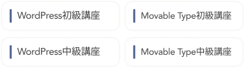

本キャンペーンについては条件がございますので「注意事項」もあわせてご確認ください。
注：TVCMにて掲載されておりますギフト券のプレゼントキャンペーンは終了しております
※調査概要：インターネット調査（「女性向けWebデザイナースクールに関するアンケート」
2022年6月28日〜7月2日/調査対象：20〜40代 女性1,200名/調査提供：株式会社ジャストシステム）
経済産業省と独立行政法人情報処理推進機構（IPA）が運営するポータルサイト「マナビDX」に提供講座が掲載開始
詳しくブランド初となるオフライン参加型イベント「Fammスクール オープンキャンパス」を二子玉川ライズで開催
詳しく「育休中にスキルを身につけたい！Webデザイナースクールに通うママのタイムスケジュール」
詳しくFammママ専用スクール、経済産業省と独立行政法人情報処理推進機構（IPA）が運営するポータルサイト「マナビDX」に提供講座が掲載開始
詳しくFammママ専用スクールのブランドキャンペーン「そのこだわりが、しごとになる。」の第二弾として、ブランド初となるオフライン参加型イベント「Fammスクール オープンキャンパス」を二子玉川ライズで開催
詳しく「Fammママ専用スクール」とクリエイター向けポートフォリオ作成サービス「foriio」が提携し、子供がいる女性がより活躍できる環境づくりをサポート詳しく
詳しく「育休ママを支援する男性経営者が自ら育休取得して分かったこと」
詳しく「育休中にスキルを身につけたい！Webデザイナースクールに通うママのタイムスケジュール」
詳しく「消えた復職の夢、ITスキルで身を立てる」
詳しくFammを運営する株式会社Timersが戦略的パートナーシップ構築を目的にNTTグループ、マイナビ、朝日新聞グループ、名古屋テレビグループ各社から資金調達を実施
詳しく「女性不況 高まる学び直し 危機備え 技術と収入源複線化」
詳しく「育休中も充実へ！ 自宅でスキルアップできるサービスが大人気」
詳しく「コロナで育休後に復帰できず…失業したママが、手に職をつけた方法
詳しく「ママ、育休中も学べるか シッター付き講座も登場」
詳しくこのような悩みの声に応えたい想いから、在宅のスキマ時間でもしっかりと稼ぐことができる
「ママ専用Webデザイン講座」を2019年3月より提供しています。
Webデザインのスキルを身に付けると高単価の在宅ワークに挑戦できます。
子供との時間を増やしたい、産休後のキャリアアップ、IT知識やスキルを身に付けたいママにおすすめです。

WebデザインはPCがあれば在宅や外出先でも働くことができ、納期のスケジュールも自分で調整することができるため
育児と両立しやすいお仕事となっています。
多くのWebデザイナースクールでは、、、
Fammは、、、

自宅で空き時間に未経験から実務レベルへ

対面授業と同等以上の学びやすさ

無料でシッターが
お預かりします

受講期間だけでなく
卒業後半年間も
質問し放題
デザイン、動画、
マーケなど
60スキル以上が無料
卒業後のお仕事を
5件まで保証
新型コロナウイルスによる影響で外出が難しい方、遠方にお住まいの方にも受講いただきたく、
無料シッター付きのLIVE配信講座を立ち上げてから毎月即満席となっています。

Webデザインのお仕事をするために必要なバナー制作・ページ作成ができるようになります。


FammのLIVE配信講座は「ママ専用ならでは」「Fammならでは」の以下の特徴を持っています。

保育士資格や幼稚園や保育園での勤務経験のあるシッターを中心にシッターサービスを無料で提供させていただきます。
講義中や自宅学習でのサポートを十分にご提供するために、あえて最大8名までの少人数制クラスにしています。
参加者のママはほぼ全員が未経験者ですので、ご安心ください。


忙しいママ向けだからこそ、1か月の短期で身につくカリキュラム。ママにとって最も参加しやすい平日の午前中に開講します。おうちでの受講なので、移動の心配もありません。
LIVE配信による講義の様子を、毎回録画もいたしますので、いつでも見返すことができます。少人数制だからこその、講義前後での講師によるサポートも可能です。


講座の卒業後、Fammから実際の案件発注を5件まで保証しています。
継続的に仕事を得るために必要な「実績作り」を実現できます。
Fammスクールの過去の卒業生の中で、この発注をきっかけにして次の仕事につなげている方が多数いらっしゃいます。
（IT系への就職が決まった方も！）
Webデザインに加え、Webマーケティング、動画など、スキル以上の応用講座を全て無料で提供しています。
また、卒業後も引き続き6ヶ月間は講師への質問回数に制限はありません。
日々の学習でつまずいた時はもちろん、実際にお仕事を進める中での相談・添削も可能です。
Webデザインスキル
グラフィックデザインスキル

Webマーケティングスキル

動画編集スキル

Webサイト設計

在宅ワーク準備スキル

写真撮影スキル
ビジネスPCスキル
マインドセットスキル
ライティングスキル
CMS運用スキル
その他スキル
※上記は応用講座の一部であり、ご要望に応える形で随時新たな講座が追加されています。
現職や復職に向けて育休中に学習をして、「より仕事で活躍したい」「お仕事の領域を拡げたい」という方にも、
1か月の短期で学べるのでおススメです。
時間は全て10時〜13時、1回3時間の講義で無理なく学べます。講義外でも、いつでも何度でも質問できます。


※アンケート回答数：（2021年4〜7月に実施した過去スクール参加者へのアンケート調査より、N＝303）
講義の度に満足度調査を実施。各コースの担当者が満足度や習熟度の状況をみながら、 短期集中コースをフルに活かしていただくためのアドバイス・サポートを行います。
短期のコースでは学習がストップしてしまうと習熟度に大きな影響を与えます。授業や日々の課題に関する質問には 遅くとも1営業日後には回答。参加者の学びのスピードを止めない体制でサポートします。
NPS®（ネットプロモータースコア）と呼ばれる先進的な顧客満足度の調査手法を取り入れ、 シビアな視点で顧客体験のチェックを毎回行い、サービス品質の向上に努めています。
月毎に開催：全5回、週に約1講義のペースで開催

他社様は「就職を前提としたコースや料金体系」になっているところがほとんどです。
Fammスクールは「ママが在宅で月に10万円以上を稼ぐことに特化」して本当に必要な内容を選び抜くことで低価格を実現しています。

ここではお伝えしきれないサービス内容の詳細説明や、気になる点・ご質問にお答えする電話説明会を実施いたします。
現在のご状況や今後の在宅ワーク・働き方の希望を踏まえたカウンセリングも合わせて実施いたします。
将来に関するご不安・モヤモヤに対する相談やアドバイスが欲しい！という目的でもぜひお気軽にご参加くださいませ。
※お子様とご一緒でも全く問題ございません。
※途中で電話を止めたりなどもできますので、お子様を最優先のうえ電話説明会ができますので、ご安心ください。
基本的には1週間に1回、1回の講座あたり3時間程度を想定しています。（一部、週2回の日程がございます） 各講座でどのようなことを学んでいただくかの詳細などは、説明会でもご説明させていただきます。
Timers社は子育て家族向けのアプリを運営している会社ですので、お気軽にお子様とご一緒にご参加ください。 また無料でご自宅にシッターサービスを提供しますので、ママさんにも安心して授業を受けていただくことが可能です。 ※地域や日程が合わない場合は、費用の負担をしますので自己手配をお願いいたします。 対面講座の場合にはキッズスペースもシッターも常駐しております。講義の教室からリアルタイムで、お子様の様子を見ることもできます。
無料ですので、お気軽にご参加ください。 説明を受け理解を深めていただいた上で、その場でお申し込みいただくか、ご検討のうえ、後日申し込みかもお選びいただけます。
大丈夫です。本講座は、Webデザイン初心者・未経験の方向けを前提にした講座コースなので、安心してご参加ください。
説明会でも詳細をご説明させていただいていますが、Fammママ専用スクールの1ヶ月のWebデザインコースの受講後ですぐに月収60万円が超えることはありません。 講座受講後、在宅でのお仕事を受け始め、継続的に実績作り・スキルアップされ、 Webデザイナーとして経験を重ねていく上で目指せる実現可能なケースだとご理解ください。

Fammのママ用Webデザイナー講座を運営している株式会社Timersは、100万人以上の会員を抱える子育て家族アプリFammを運営している会社となります。 子育てママの新しいキャリアや多様な働き方を応援したいという想いから、Fammの利用者や社内の子育てママの声をもとに、本講座をスタートいたしました。